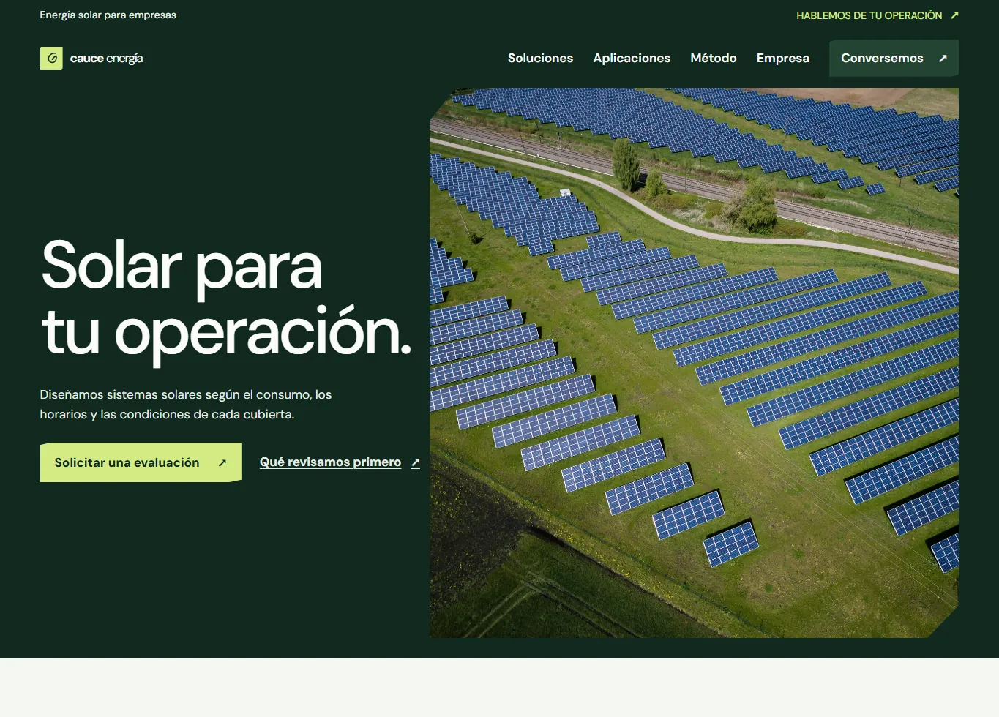
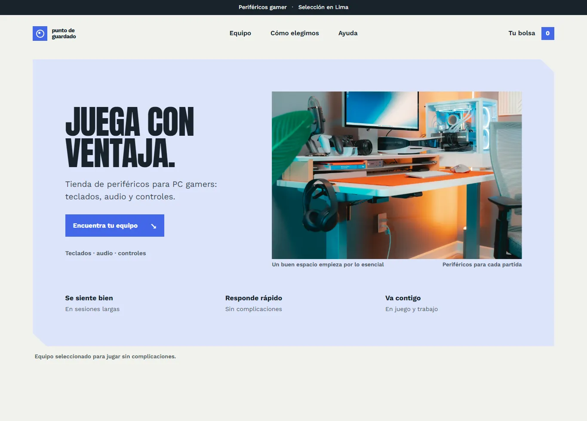
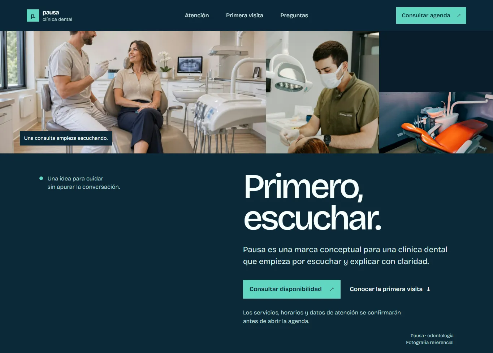
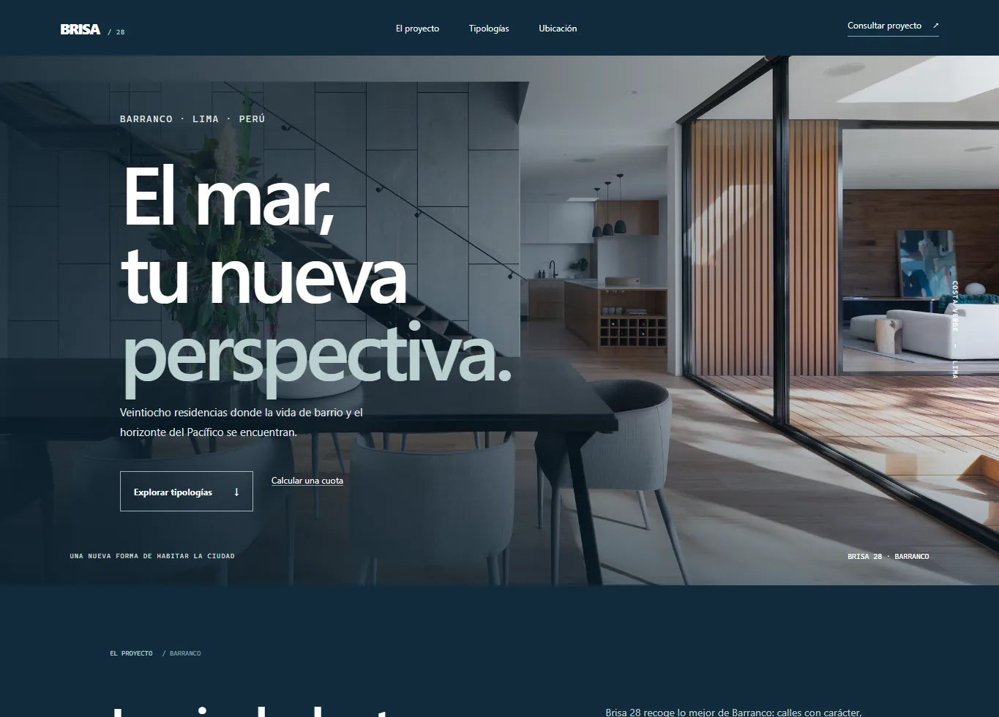

Cauce Energía
Una empresa solar explica cómo evalúa el consumo de una operación antes de proponer una solución.
Concepto de marca · sitio multipáginaDiseño y desarrollo web para negocios y equipos que necesitan explicar mejor lo que hacen y conectar con sus clientes. Proyectos conceptuales, sitios responsive y funciones útiles.
Demos conceptuales que muestran decisiones de diseño, contenido e interacción en distintos sectores.

Una empresa solar explica cómo evalúa el consumo de una operación antes de proponer una solución.
Concepto de marca · sitio multipágina
Una tienda de periféricos gamer que ayuda a recorrer, filtrar y reunir productos en una bolsa demostrativa.
Concepto de marca · comercio demo
Una clínica dental conceptual presenta su atención con calma y deja preparado el camino para una agenda en línea.
Concepto de marca · agenda desactivada
Una propuesta residencial muestra sus tipologías y permite comparar espacios y estimar una cuota.
Concepto de marca · datos ilustrativosLos cuatro sitios son proyectos conceptuales de portafolio; no representan clientes activos ni ofertas comerciales.
El alcance se define con cada negocio. Estas son soluciones que puedo desarrollar con las tecnologías y funciones demostradas en mis proyectos.
Presentan con claridad qué ofrece una empresa, cómo trabaja y cuál es el siguiente paso.
Ordenan una propuesta alrededor de una acción: consultar, cotizar o conocer un servicio.
Organizan productos con búsqueda, filtros y bolsa; los pagos requieren integrar un proveedor real.
Hace que la información y los controles se puedan usar desde móvil, tablet o computadora.
Preparo formularios conectados al servicio de recepción elegido para el proyecto.
Actualizo contenido, corrijo detalles y sumo funciones sobre un sitio existente.
LIMA, PERÚ
DISPONIBLE PARA CONVERSAR
Me interesa convertir ideas en sitios claros, visuales y fáciles de recorrer. En este portafolio reúno proyectos propios para practicar y mostrar cómo resuelvo distintos retos de contenido, interfaz y desarrollo frontend.
Trabajo con HTML, CSS y JavaScript en sitios estáticos. Cuando un proyecto necesita datos o servicios externos, identifico esa dependencia y dejo claro qué falta para ponerla en marcha.
Ver GitHubEstoy abierto a conversar sobre proyectos freelance y oportunidades laborales. Puedes escribirme desde mi perfil de GitHub; ahí encontrarás el canal de contacto que tengo publicado.
Contactarme en GitHubCorreo profesional y LinkedIn: pendientes de confirmar.